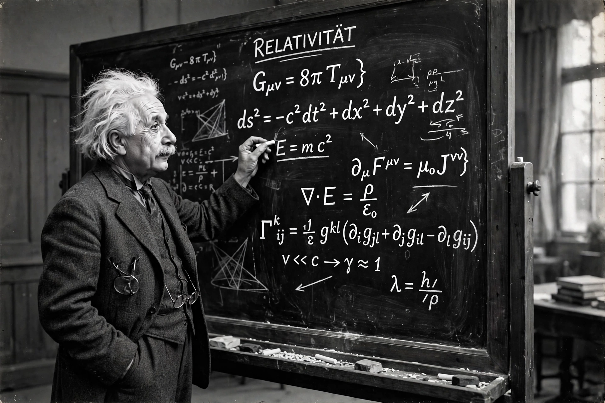

Cosmological constant

[Image: Portrait of Albert Einstein at a blackboard covered with equations]The cosmological constant (usually denoted by the Greek capital letter lambda, Λ) is a coefficient that Albert Einstein added to his field equations of general relativity in 1917 to counteract the attractive force of gravity and achieve a static universe, then thought to be the natural state of the cosmos.
After the discovery of the expansion of the universe, Einstein abandoned the term — legend (via George Gamow) calls it his 'biggest blunder'. It returned to prominence in 1998 when the accelerating expansion of the universe was discovered: in the standard ΛCDM model, Λ represents Dark energy as the energy density of empty space itself, contributing about 68% of the universe's total energy. The enormous mismatch between the observed value and quantum-field-theory estimates (the 'cosmological constant problem', off by as much as 10¹²⁰) is considered one of the worst predictions in physics.
History
Einstein introduced Λ reluctantly, to permit a static, finite universe. Friedmann's and Lemaître's expanding solutions and Hubble's observations made it unnecessary, and Einstein dropped it in 1931. The term survived in the background — Zel'dovich connected it to vacuum energy in 1967 — and observations of distant supernovae in 1998 forced it back into the standard model. Whether 'dark energy' is exactly a constant or an evolving field (quintessence) is an open question addressed by surveys such as DESI, whose recent results have hinted, tentatively, at evolution.
The problem of the value
Summing the zero-point energies of quantum fields up to the Planck scale predicts a vacuum energy ~10¹²⁰ times larger than the observed Λ — so large the universe could never have formed structure. Supersymmetry or other mechanisms might cancel most of it, but no accepted explanation exists; Steven Weinberg's 1987 anthropic bound — that Λ must be small for galaxies (and observers) to exist — remains a controversial landmark in the debate.